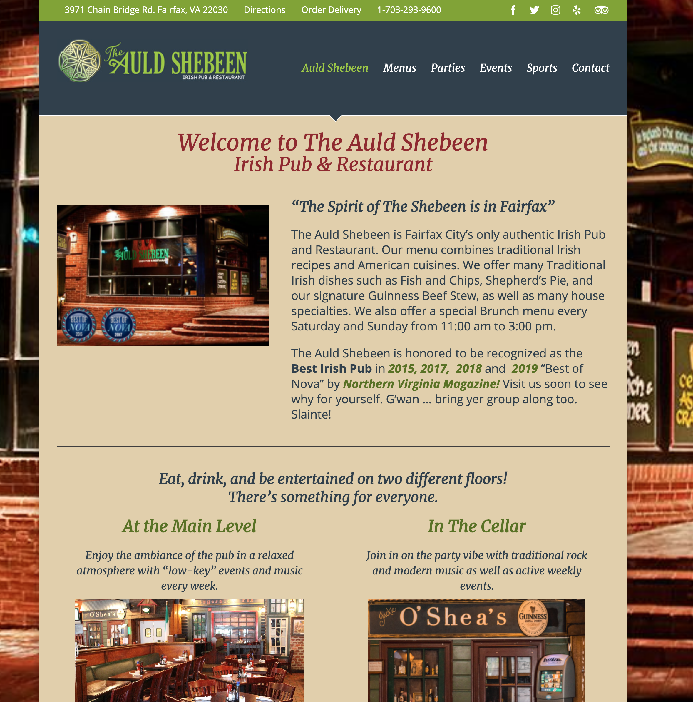

First up, is the site for Sisters, the site for two cafe/restaurants of the same name that both serve Thai food and beverages. The site is good, the aesthetic is clean (for the most part) and it covers both of the Sisters locations. My primary issue with the site, is how much unused empty space there is on the sides, in addition to the ugly orange buttons at the top of the page. Overall, a decent site, but with room to improve.
 The Auld Shebeen SiteNext, there is the page for the Irish Pub and restaurant, The Auld Shebeen. The restaurant's page has a clean setup where you can see a short bio, upcoming events, and tabs for more specifics. It is easy to navigate. My only critiques come from the color pallate being unappealing and an overuse of cropped image squares.
 DeClieu
DeClieu
De Clieu is a cafe that serves coffee and french pastries and food. The Site is stronger than the previous two as it has a nicer color pallate, good organization, a clean set up, and easy to maneuver bar on the top of the screen. I have very little critique for this site as it works very well, it is only a bit unoriginal.
 Magnolia
Magnolia
The site for Magnolia, a Thai pastry shop is very well organized, and has a pretty and unique main page, different from the other restaurants being reviewed here. The menu lists are easy to read and look good, the aesthetic is pretty, and the menus make sense. My biggest issue, is that the text on the homepage is a bit difficult to read, but this is not important, as everything else is clear.
 Vivi Bubbletea
Vivi Bubbletea
Lastly is the site for Vivi Bubble Tea, the Taiwanese Bubble Tea cafe. The site hasa striking Aesthetic, its very colorful, showcases its products and is easy to read and navigate. In addition, despite how full and packed the website is, it still feels clean to me. The only criticism, is I can imagine some people feeling that the website is a bit cluttered, to which I would disagree.